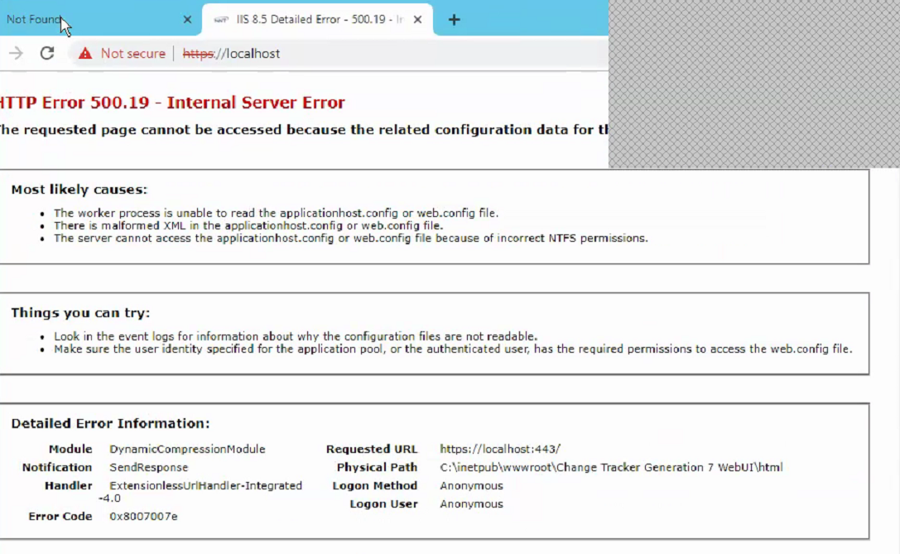

Problem and Cause
The requested page cannot be accessed because the related configuration data for the
page is invalid.This problem is related to the XPress compression schema module (suscomp.dll) which gets installed with WSUS. Compression schemes are defined
globally and they try to load in every Application Pool. It will result in this
error when the 64 Bit version of suscomp.dll attempts to load in an Application Pool
which is running in 32 Bit mode [enable32BitAppOnWin64]. 32 Bit mode is needed for SafeGuard Enterprise Server to run.

Windows Server 2008 (R2)
Windows Server 2012 (R2)
Resolution
- Navigate to %WINDIR%\system32\inetsrv\config\
- Create a backup copy of the file applicationhost.config and save it to a different location
- Open the applicationhost.config in the Notepad
- Search for the following entry:
- Remove / Disable the XPress compression schema line from the configurationfile
- Save the applicationhost.config and restart IIS services.